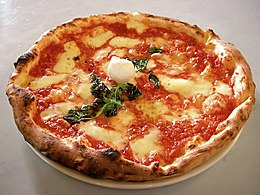

pizza

description
The following method I patched together from recipes in both Joy of Cooking and Cook's Illustrated's The Best Recipe. The pizza dough recipe makes enough dough for two 10-12 inch pizzas.
ingredients:
- 1 1/2 cups (355 ml) warm water
- 1 package (2 1/4 teaspoons) active dry yeast
- 3 3/4 cups (490 g) bread flour
- 2 tablespoons extra virgin olive oi
- 2 teaspoons salt
- 1 teaspoon sugar
steps:
- Proof the yeast
- Make and knead the pizza dough
- Let the dough rise
- Preheat pizza stone (or pizza pan or baking sheet)
- Divide the dough into two balls
- Prep toppings
- Flatten dough ball, and stretch out into a round
- Spread with tomato sauce and sprinkle with toppings
- Bake pizza